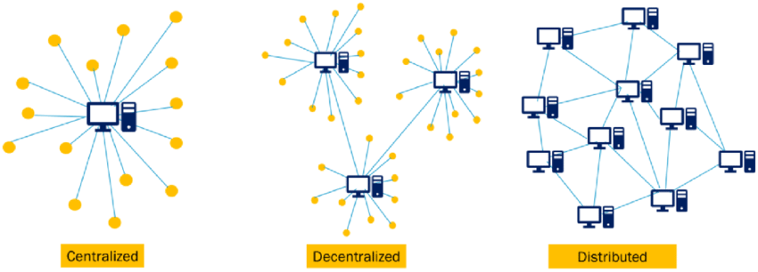

Introduction:
What is blockchain ?
Making payments through mobile phones, online digital or car payments it involves so many intermediates systems each of them plays respective roles in the process of payments, which is a long, complex and costly process. Typically it involved bank or large payment processing business who keeps tracing money from a buyer to merchant or producer to consumer etc…
What Blockchain can do ?
Without involving any intermediates is there any system reduce complicity, cost and time? Blockchain is a system we can store info which is nearly impossible to edit data or hack. Blockchain is not just for a payments tracking it involves in goods and info tracking, Blockchain can seem complicated and a little impenetrable, which is ironic as one of the core tenets of this technology is its openness and transparency.
How Blockchain works ?
Blockchain allows direct connection between consumer and producer without any need of intermediatePublics.
Using cryptography blockchain transfer data secure, blockchain provides a decentralized data base or a digital ledger of transactions that everyone on the network can see. This networked is a chain of computers that must all approve before it can be verified and recorded.

Types of Blockchain:
- 1) Public Blockchain
- 2) Private Blockchain
- 3) Hybrid Blockchain
- 4) Consortium Blockchain